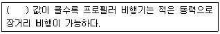
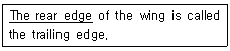
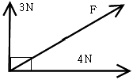

항공기체정비기능사 (2008-02-03 기출문제)
1과목: 비행원리
1. 비행기의 받음각이 일정 각도 이상 되어 최대 양력값을 얻었을 때에 대한 설명 중 틀린 것은?
- 이때의 받음각을 실속받음각이라 한다.
- 이때의 양력계수값을 최대양력계수라 한다.
- 이때의 고도를 최고 고도라 한다.
- 이때의 비행기 속도를 실속속도라 한다.
(정답률: 51%)

2. 날개 공기역학적 중심이 비행기의 무게중심 앞 0.⑤c 에 있고 공기역학적 중심주의 키놀이 모멘트계수는 -0.016 이다. 양력계수가 0.45인 경우 무게중심 주위의 모멘트 계수는 얼마인가? (단, 공기역학적 중심과 무게중심은 같은 수평선상에 놓여 있다.)
- 0.45
- 0.⑤
- 0.0065
- -0.016
(정답률: 49%)
3. 다음 ( )안에 알맞은 것은?

- 받음각
- 양항비
- 추력
- 항력
(정답률: 68%)
4. 비행기의 가로안정에서 가장 중요한 요소는 무엇인가?
- 기관의 장착위치
- 동체의 모양
- 플랩의 장착위치
- 날개의 쳐든각
(정답률: 92%)
5. 수평 비행하는 비행기가 받음각이 일정한 상태에서 고도가 높아지면 속도(V) 와 필요마력은 각각 어떻게 되는가?
- V와 PR 모두 감소
- V와 PR 모두 증가
- V는 증가 PR은 감소
- V는 감소 PR은 증가
(정답률: 50%)
6. 프로펠러 깃의 시위선과 깃의 회전면이 이루는 각을 무엇이라고 하는가?
- 깃각
- 유입각
- 받음각
- 피치각
(정답률: 59%)
7. 속도50m/s 로비행하는 비행기의 항력이 1000kgf 라면 이때 비행기의 필요마력은 약 몇 hp 인가?
- 529
- 667
- 720
- 854
(정답률: 46%)
8. 구름의 생성 비 눈 안개등의 기상현상이 일어나는 대기권은?
- 성층권
- 대류권
- 중간권
- 극외권
(정답률: 89%)
9. 비행기의 3축 운동과 조종면의 상관관계를 가장 옳게 연결한 것은?
- 키놀이 와 승강키
- 옆놀이 와 방향키
- 빗놀이 와 승강키
- 옆놀이 와 승강키
(정답률: 78%)
10. 대형제트기에서 착륙 스포일러를 사용하는 가장 큰 이유는?
- 비행기의 착륙 무게를 하기 위하여
- 항력을 증가하기 위하여
- 저항을 감고시키기 위하여
- 버핏현상을 방지하기 위하여
(정답률: 77%)
11. 헬리콥터의 조종에서 회전날개의 피치를 동시에 증가 또는 감소되도록 조작하는 장치는?
- 페달
- 주기적 피치 제어간
- 동시 피치 제어간
- 리드 래그힌지
(정답률: 83%)
12. 헬리콥터의 회전날개 각속도가 50rad/s이고 회전축으로부터 깃 끝까지의 거리가 5m일때 회전날개 깃 끝의 회전선속도는 약 몇m/s 인가?
- 125
- 250
- 300
- 500
(정답률: 89%)
13. 베르누이정리에 대한 설명으로 가장 옳은 것은?(문제 오류로 보기 내용이 정확하지 않습니다. 정답은 4번입니다. 정확한 보기 내용을 아시는 분께서는 오류 신고를 통하여 작성 부탁 드립니다.)
- 전압과 동압의 합은 일정하다.
- 전압과 정압의 합은 일정하다.
- 동압과 정압의 차은 일정하다.
- 동압과 정압의 합은 일정하다.
(정답률: 85%)
14. 날개 길이 14m 기하학적 평균 시위가 2m 인 페이퍼형 날개의 가로세로비는 얼마인가?
- 7
- 12
- 14
- 28
(정답률: 72%)
15. 다음 중 레이놀즈수의 정의를 옳게 나타낸 것은?
- 마찰력과 항력의 비
- 양력과 항력의 비
- 관성력과 점성의 비
- 항력과 관성력의 비
(정답률: 77%)
16. 일반목재 종이 직물 등 가연성 물질에서 발생하는 화재는?
- A급 화재
- B급 화재
- C급 화재
- D급 화재
(정답률: 89%)
17. 세이크 프루프 로크 와셔가 사용되는 곳으로 가장 옳은 것은?
- 회전을 방지하기 위하여 고정와셔가 필요한 곳에 사용한다.
- 고열에 잘 견딜수 있고 심한진동에도 안전하게 사용 할 수 있으므로 조종계통 및 계통에 사용한다.
- 기체구조 접합물에 많이 사용한다.
- 기체외피 구조의 접착에 일반적으로 사용한다.
(정답률: 63%)
18. 17ST(2017)- 에서“D" 의미하는것은?
- RIVET의 머리모양을 나타낸 것이다.
- RIVET의 길이를 나타낸 것이다.
- RIVET의 재질기호이며, 상온에서는 너무 강해 그대로는 리베팅 할 수 없으며 요구되는 곳에 사용가능하다.
- RIVET의 재질기호이며 강한강도가 요구되는 곳에 사용하며 열처리에 관계없이 사용된다.
(정답률: 53%)
19. 다이얼게이지로 측정 할 수 없는 것은?
- 경도의 측정
- 흔들림의 측정
- 편심의 측정
- 표면 거칠기의 측정
(정답률: 44%)
20. 금속표면을 도장작업하기 전에 적절한 전처리 작업을 하여 금속표면과 도료의 마감칠 사이에 접착성을 높이기 위한 도료는?
- 아크릴 래커
- 폴리우레탄
- 프라이머
- 비계획 에나멜
(정답률: 50%)
2과목: 항공기정비
21. 항공기재의 품질을 향상시키거나 항공기 및 관련 장비의 기능변경을 목적으로 하여 설계 변경을 시키는 개조 작업 및 일시적인 검사 등을 수행하는 것에 해당되는 것은?
- 정상 작업
- 특별 작업
- 계획 정비
- 비계획 정비
(정답률: 53%)
22. 세척제, 침투제, 현상제 등이 검사에 이용되는 비파괴 검사법은?
- 자분탐상검사
- 육안검사
- 초음파검사
- 침투탐상검사
(정답률: 87%)
23. 사고예방대책의 기본원리 5단계 중 제2단계인 “사실의 발견”에서의 조치사항과 가장 먼 것은?
- 자료수집
- 작업공정분석
- 점검. 조사실시
- 기술 개선
(정답률: 62%)
24. 제한된 범위 내에서 기체구조의 외부검사, 착륙장치 및 제동부위의 윤활그리스 주입 및 시한성 부품의 교환 등 항공기의 감항성을 유지하는 필수적인 점검은?
- 비행전 점검
- A검사
- B검사
- C검사
(정답률: 31%)
25. What's the primary function of the combustion section?
- to burn the fuel/air mixture
- to freeze the fuel/oil mixture
- to cold the fuel/oil mixture
- to cold the fuel/air mixture
(정답률: 44%)
26. 항공기 정비 중 경미한 보수에 해당하지 않는 것은?
- 지상 취급
- 항공기 세척
- 보급
- 부품의 교환
(정답률: 55%)
27. 다음 밑줄 친 부분의 내용으로 가장 올바른 것은?

- 앞부분
- 뒷부분
- 옆부분
- 동체부분
(정답률: 57%)
28. 보어스코프(Borescope)의 주된 용도는?
- 외부 결함의 관찰
- 내부 결함의 관찰
- 외부의 측정
- 내부의 측정
(정답률: 68%)
29. 볼트나 너트를 죌 때 먼저 개구부위로 조이고 마무리는 박스부분으로 조이도록 된 공구는?
- 박스 렌치
- 오픈 엔드 렌치
- 조합 렌치
- 소켓 렌치
(정답률: 61%)
30. Turn buckle 의 나사는 일반적으로 어떻게 되어 있는가?
- 한쪽은 오른나사, 한쪽은 왼나사
- 양쪽 모두 왼나사
- 양쪽 모두 오른나사
- 나사는 한쪽만 있으며 오른 나사
(정답률: 86%)
31. 고압선, 폭발물, 위험한 기계류 등의 비상정지스위치, 소화기, 화재경보장치 및 소화전 등에 사용되는 색은?
- 빨간색
- 노란색
- 녹색
- 주황색
(정답률: 81%)
32. 헬리콥터의 지상 정비지원은 다음 중 어디에 해당하는가?
- 운항 정비
- 시한성 정비
- 공장 정비
- 벤치 체크
(정답률: 63%)
33. 항공기 계통의 고온, 고압의 작동 요구 조건에 맞도록 제작된 호스의 재질로서 진동과 피로에 강하며 강도가 높고, 고무 호스보다 부피의 변형이 적은 특징을 가진 것은?
- 부나-N(buna-N)
- 네오프렌(neoprene)
- 부틸(butyl)
- 테프론(teflon)
(정답률: 63%)
34. 리벳 선택시 리벳의 직경은 판재 두께의 몇 배가 가장적당한가?
- 1
- 3
- 5
- 10
(정답률: 79%)
35. 고압가스 취급시 주의할 사항 중 틀린 것은?
- 충전용기와 잔가스용기는 구분 없이 같이 보관한다.
- 용기보관장소에는 작업에 필요한 물건 외에는 두지 않는다.
- 비어 있는 용기라도 충격을 받지 않도록 주의한다.
- 충전용기는 직사광선을 받지 않도록 조치한다.
(정답률: 85%)
36. 페일 세이프(Fail-safe)구조에 대한 설명으로 가장 옳은 것은?
- 일부가 파괴도어도 나머지 부분이 하중을 지지하여 항공기 구조상 결함을 보완하는 구조이다.
- 무게를 경감하기 위한 구조이다.
- 제작하는 원가를 최소화하는 경비행기에 사용된다.
- 내부공간을 최대화하기 위한 구조이다.
(정답률: 80%)
37. 항공기의 바퀴에 장착되어 있는 퓨즈 플러그의 주된 역할은?
- 타이어 내의 압력을 항상 일정하게 유지시킨다.
- 제동장치의 효율을 극대화시킨다.
- 과도한 압력에만 작동한다.
- 부적절한 브레이크 사용으로 과열시 타이어를 보호한다.
(정답률: 59%)
38. 알루미늄합금의 일반적인 특성에 대한 설명 중 틀린 것은?
- 상온에서 기계적 성질이 우수하다.
- 전성이 우수하여 가공성이 좋다.
- 내식성이 양호하다.
- 시효경화가 없다.
(정답률: 79%)
39. 실란트(Sealant)에 대한 설명 중 틀린 것은?
- 기체표면의 흠을 메워 공기 흐름의 혼란을 감소시킬 목적으로 사용된다.
- 작업하는 부분에 낡은 실란트가 있어 제거할 때는 제거제를 사용하여 깨끗이 제거한다.
- 보관은 사용시 접착의 밀착성을 위해 따뜻하게 보관한다.
- 성분적으로 티오콜계와 실리콘계의 합성고무로 나뉜다.
(정답률: 71%)
40. 벌크헤드(Bulkhead)에 대한 설명 중 틀린 것은?
- 동체가 비틀림에 의해 변형되는 것을 막아준다.
- 프레임, 링 등과 함께 집중 하중을 받는 부분으로부터 동체의 외피로 응력을 확산시킨다.
- 날개, 착륙장치 등의 장착부를 마련해 주는 역할을 한다.
- 동체 앞에서부터 뒤쪽으로 15~50cm 간격으로 배치한다.
(정답률: 46%)
3과목: 항공기체
41. 전파투과성, 내후성 및 높은 강도를 가지므로 레이돔, 동체 및 날개 등의 구조재용 복합재료의 모재수지로 사용되며, 항공기 구조물용 접착제나 도료의 재료로도 사용되는 것은?
- 멜라민 수지
- 실리콘 수지
- 폴리염화비닐
- 에폭시 수지
(정답률: 66%)
42. 헬리콥터의 테일붐에 대한 설명 중 틀린 것은?
- 이 구조는 알루미늄합금과 마그네슘합금으로 만들어진다.
- 꼬리회전날개의 구동축은 테일붐 위쪽에 베어링으로 장착되어 덮개로 보호해 주고 있다.
- 안정판은 수평안정판과 수직안정판으로 구성되며 허니콤으로 되어 있다.
- 수평안정판은 테일붐 좌.우측에 각각 따로 설치한다.
(정답률: 59%)
43. 정하중시험 중 이론적으로 예측하기 어려운 많은 자료를 얻을 수 있으며, 시험하중이 대단히 높은 값을 가지는 시험은?
- 강성시험
- 한계하중시험
- 극한 하중시험
- 파괴시험
(정답률: 31%)
44. 헬리콥터의 세미모노코크형 동체에서 수평구조 부재는?
- 벌크헤드(Bulkhead)
- 세로대
- 정형재
- 링(Ring)
(정답률: 57%)
45. 뒷전 고양력 장치를 사용했을 때 나타나는 현상으로 옳은 것은?
- 이륙 거리가 길어진다.
- 양력 계수가 증가된다.
- 추력이 감소된다.
- 비행 속도가 빨라진다.
(정답률: 70%)
46. 비행 중 비행기의 세로안정을 위한 것으로서 대형 고속제트기의 경우 조종계통의 트림(Trim)장치에 의해 움직이도록 되어 있는 것은?
- 수직안정판
- 방향키
- 수평안정판
- 도움날개
(정답률: 52%)
47. 한쪽 끝은 고정 지지점이고, 다른 쪽은 롤러 지지점인 보의 종류는?
- 단순보
- 외팔보
- 고정보
- 고정지지보
(정답률: 58%)
48. 스케치에 대한 설명 중 틀린 것은?
- 사물에 대한 생각을 시각적으로 보여준다.
- 정밀 도구를 주로 사용한다.
- 아이디어의 내용을 쉽게 표현할 수 있다.
- 도면 제작 시간을 단축시켜준다.
(정답률: 74%)
49. 강(AISI 4340)으로 된 봉의 바깥지름이 1cm 이다. 인장하중 100kg이 작용할 때 이 봉의 안전여유는 약 얼마인가?(단, 강의 항복강도 (σy)는 14800kg/cm2이다.)
- 100
- 1⑤
- 110
- 115
(정답률: 23%)
50. 주철에 대한 설명으로 가장 옳은 것은?
- 단조, 압연 , 인발을 할 수 없다.
- 담금질성이 우수하다.
- 전연성이 매우 크다.
- 자연시효 현상이 일어나지 않는다.
(정답률: 31%)
51. 항복강도(Yield Strength)에 대한 설명으로 가장 옳은 것은?
- 재료가 받을 수 있는 최대응력을 말한다.
- 극한강도 (Ultimate Strength)를 말한다.
- 인장강도(Tensile Strength)보다 크다.
- 항복점의 응력을 말한다.
(정답률: 57%)
52. 항공기를 설계할 때 기체의 강도는 한계하중보다 좀 더 높은 하중에서 견딜 수 있도록 설계하는 이유를 설명한 것 중 틀린 것은?
- 항공역학 및 구조역학 등의 이론적 계산에서 많은 가정이 있기 때문에
- 재료의 기계적 성질 등이 실제의 값과 약간의 차이가 있기 때문에
- 항공기는 비행 중 한계하중보다 큰 하중을 받는 경우가 많기 때문에
- 제작가공 및 검사방법 등에 따라 측정한 수치에 오차가 발생할 수 있기 때문에
(정답률: 52%)
53. 헬리콥터의 양력과 항력의 합이 헬리콥터의 무게보다 적은 경우의 비행을 무슨 비행이라고 하는가?
- 전진비행
- 후진비행
- 수직하강
- 호버링
(정답률: 61%)
54. 도면관련문서인 적용목록에 기록되는 내용이 아닌 것은?
- 조립도해목록
- 부품번호
- 항공기 모델
- 일련번호 및 개정부호
(정답률: 53%)
55. 금속의 가공 방법 중 소성 가공법이 아닌 것은?
- 단조
- 압연
- 용접
- 프레스
(정답률: 65%)
56. 다음 [그림]과 같이 A지점에 힘이 직각으로 3N과 4N이 작용한다면 합력 F는 얼마인가?

- 3N
- 4N
- 5N
- 6N
(정답률: 80%)
57. 항공기 기관 마운트의 역할에 대한 설명으로 가장 옳은 것은?
- 기관의 무게를 지지하고 기관의 추력을 기체에 전달한다.
- 항공기의 착륙장치(Landing Gear)를 지지 수용한다.
- 보조날개를 지지하여 항공기의 선회를 도모한다.
- 동체와 날개의 연결부로 날개의 하중을 지지한다.
(정답률: 70%)
58. 헬리콥터가 자동회전 비행을 할 때에 회전날개 구동축을 기관구동축과 분리시키는 장치는?
- 자동비행 분리축
- 기관분리 구동축
- 자동비행장치
- 자유회전장치
(정답률: 24%)
59. 금속 재료의 열처리 목적이 아닌 것은?
- 기계적 성질개선
- 내마멸성 및 내식성 향상
- 충격저항 감소
- 재료의 가공성 개선
(정답률: 58%)
60. 응력외피형 구조 날개에 작용하는 하중에서 비틀림 모멘트를 담당하는 구조부재는?
- 스파(Spar)
- 외피(Skin)
- 리브(Rib)
- 스트링어(Stringer)
(정답률: 20%)